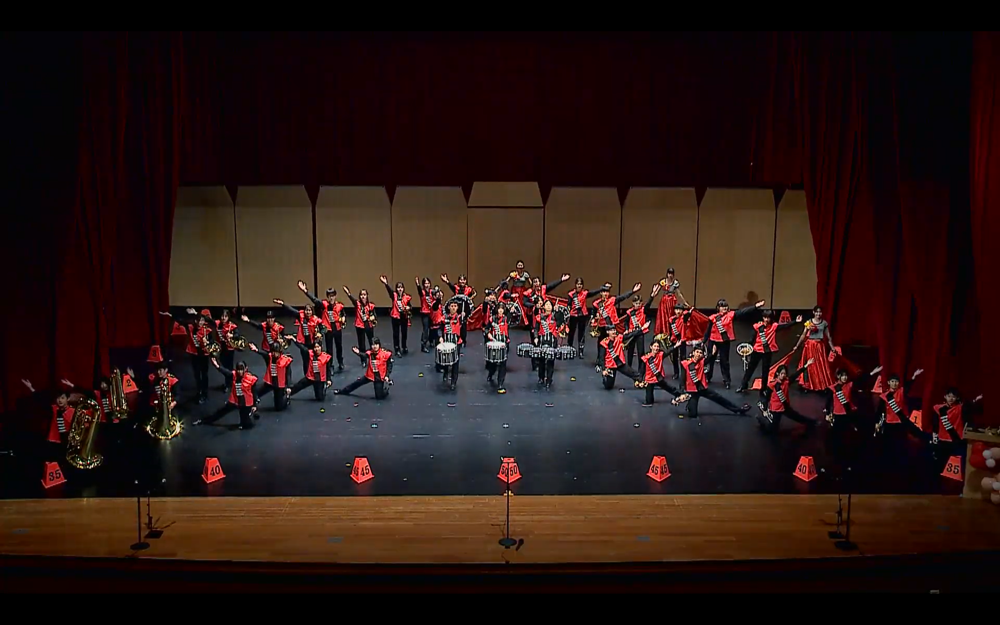
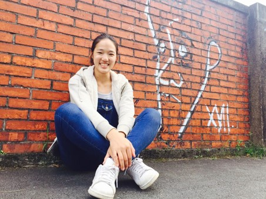

合奏 + 行進管樂並進
培養孩子的

仁和國中管樂團
全桃園唯一行進管樂、室內合奏並行的優秀樂團
擁有優良師資、資源與傳統，長年於學生音樂比賽中屢獲佳績
歡迎就讀仁和國中的同學們加入！
樂團特色
充實的樂團內容訓練
學習的同時有更多的體驗
學習如何與團隊合奏
如何與他人互相配合
大量演出機會
學習克服緊張、學習抗壓

樂團總指揮 楊宇綸 老師
- 中原大學會計系，輔仁大學音樂研究所樂團指揮組，指揮師事林俊吉、郭聯昌教授。
- 自2001年任平鎮高中指導老師至今，連續帶領平鎮高中管樂團代表參加全國學生音樂比賽榮獲特優及優勝。
2006年指揮平鎮國中參加台管盃管樂大賽，榮獲國中組第一名及指定曲最佳詮釋獎。
2009年帶領平鎮高中參加台灣管樂協會盃管樂大賽獲第二名殊榮。
自2002年起，帶領樂團參加學生音樂比賽，共榮獲多次特優殊榮。 - 2010年4月與音樂大師秋山紀夫及八木澤教司合作演出中日交流音樂會，並與上低音號演奏家露木薰合作演出協奏曲。
- 2014年7月帶領平鎮國中管樂團參加北京管樂節管樂大賽榮獲最佳指揮獎。
- 2022年9月帶領平鎮國中管樂團獲選111年全國學生音樂比賽特優團隊聯合音樂會管樂團代表團隊，於衛武營國家藝術中心展演。
完整經歷
- 桃園市立平鎮高中管樂團指揮
- 桃園市立平鎮國中管樂團指揮
- 桃園市立仁和國中管樂團指揮
- 桃園市立元生國小管樂團指揮
- 經歷：國立武陵高中管樂團指揮、國立中壢家商管樂團指揮、 國立楊梅高中管樂團指揮、新北市立三和國中管樂團指揮、 桃園市興國國小管樂團指揮、桃園私立有得雙語國中小管樂團指揮、 桃園市立興南國中低音銅管分部老師、 汲音交響管樂團常任指揮/執行長、台灣管樂協會監事、 2014年北京國際管樂節管樂大賽最佳指揮獎
- 指導樂團成績(近6年)：
2024年3月(112學年) 平鎮國中管樂團 全國學生音樂比賽北區國中管樂合奏A組 特優 仁和國中管樂團 全國學生音樂比賽北區國中管樂合奏B組 優等 仁和國中管樂團 全國學生音樂比賽北區國中室外行進管樂B組 特優 平鎮高中管樂團 全國學生音樂比賽北區高中管樂合奏B組 特優 元生國小管樂團 全國學生音樂比賽北區國小管樂合奏B組 優等 2023年3月(111學年) 平鎮國中管樂團 全國學生音樂比賽北區國中管樂合奏A組 特優 仁和國中管樂團 全國學生音樂比賽北區國中管樂合奏B組 優等 仁和國中管樂團 全國學生音樂比賽北區國中室外行進管樂B組 特優(第一名) 六和國中管樂團 全國學生音樂比賽北區國中管樂合奏B組 優等 平鎮高中管樂團 全國學生音樂比賽北區高中管樂合奏B組 特優 元生國小管樂團 全國學生音樂比賽北區國小管樂合奏B組 優等 2022年3月(110學年) 平鎮國中管樂團 全國學生音樂比賽北區國中管樂合奏A組 特優 仁和國中管樂團 全國學生音樂比賽北區國中管樂合奏B組 優等 仁和國中管樂團 全國學生音樂比賽北區國中室外行進管樂B組 特優(第一名) 六和國中管樂團 全國學生音樂比賽北區國中管樂合奏B組 優等 平鎮高中管樂團 全國學生音樂比賽北區高中管樂合奏B組 優等 平鎮高中銅管五重奏 全國學生音樂比賽北區高中銅管五重奏B組 優等 2020年12月 (109學年) 平鎮高中管樂團 桃園市學生音樂比賽高中管樂合奏B組 特優 (晉級全國) 平鎮高中銅管五重奏 桃園市學生音樂比賽高中銅管五重奏B組 優等 (晉級全國) 平鎮國中管樂團 桃園市學生音樂比賽國中管樂合奏B組 特優 (晉級全國) 六和國中管樂團 桃園市學生音樂比賽國中管樂合奏B組 特優 (晉級全國) 仁和國中管樂團 桃園市學生音樂比賽國中室外行進管樂B組 優等 (晉級全國) 2019年12月 (108學年) 平鎮高中管樂團 桃園市學生音樂比賽高中管樂合奏B組 特優 (晉級全國) 平鎮高中銅管五重奏 桃園市學生音樂比賽高中銅管五重奏B組 特優 (晉級全國) 平鎮國中管樂團 桃園市學生音樂比賽國中管樂合奏B組 特優 (晉級全國) 仁和國中管樂團 桃園市學生音樂比賽國中管樂合奏B組 特優 (晉級全國) 六和國中管樂團 桃園市學生音樂比賽國中管樂合奏B組 特優 (晉級全國) 2019年3月 (107學年) 平鎮高中管樂團 全國學生音樂比賽北區高中管樂合奏B組 特優(第一名) 平鎮高中銅管五重奏 全國學生音樂比賽北區高中銅管五重奏B組 優等(第一名) 平鎮國中管樂團 全國學生音樂比賽北區國中管樂合奏B組 特優(第二名) 三和國中管樂團 全國學生音樂比賽北區國中管樂合奏B組 特優(第三名) 仁和國中管樂團 全國學生音樂比賽北區國中管樂合奏B組 特優 六和國中管樂團 全國學生音樂比賽國中管樂合奏B組 優等

行進樂隊總教練 周健安 老師
- 輔仁⼤學⾳樂系研究所畢業，主修樂團指揮，師從指揮家郭聯昌教授，管樂教學啟蒙於 周忠實⽼師，並曾獲美國指揮⼤師芬奈爾教授（Dr. Frederick Fennell）指導。
- 1993年開始指導管樂團迄今，主要擔任各級學校樂團指導，並致⼒於室外樂隊演出型態之 推廣，多次獲邀至天津、南京、鄭州等地舉辦講座及指導樂團。
- 多年來指導曉明女中⾏進樂隊參與⾳樂比賽，連續多年獲得特優第⼀名的佳績，並於2018年 參加世界盃⾏進樂隊⼤賽(WAMSB)榮獲⾦牌獎，2019年更遠赴⾺來西亞參加『AJMBC』⼤ 賽，榮獲⾦牌獎及全場最⾼分之佳績。
- 室外樂專長為整體設計及規劃，Pyware 3D Drill Design 軟體教學及專案圖形設計，⾏進打擊 樂教學。
- ⽬前為海洋⼤學管樂團，嘉義市南興國中樂旗隊常任指揮及多所學校樂團指導⽼師，並擔任 Mair Drum 打擊樂器品牌代⾔⼈

旗隊教練 簡語彤 老師
- 現為「無限旗旗舞藝術表演團」特約表演者，曾任團長，景美女中旗隊第12屆畢業。 2009 年加入無限旗至今，多次隨團參加國內外商業邀演。
- 現任東石國中、中正預校、基隆市立中山高中、八斗國中旗隊教練。
- 重要舞台經歷：
-
2011年，無限旗公演《從前 從前》表演者。
2016年，無限旗公演《Mobiusband》舞台監督。
2017年，台灣國際行進樂隊公開賽旗隊比賽參賽作品《愛情．死亡．時間》導演。
2018年，世界盃行進樂隊大賽旗隊比賽《以愛為名》表演者。